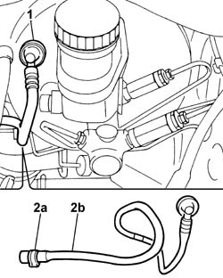
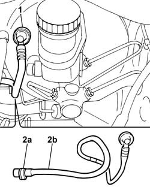

3330D20 one-way valve for brake servo - r+r
- Path
- Procedures > 33 BRAKING SYSTEM > 3330 HYDRAULIC BRAKING SYSTEM > 3330D BRAKE VACUUM SYSTEM > 3330D20 one-way valve for brake servo - r+r
- Kind
- repair procedure (removal / refitting; the operation number is the code)
- Applies to
- all engines; all production periods
- Interactive page
- https://sloeber94.github.io/elrnDB-fPnd/en/#/2752741
Applies to: engines: 1.1, 1.2 8v; all production periods
 Removing
Removing
 Refitting
Refitting1048A10 air cleaner filtering element - replace
1. Disconnect the one-way valve from the brake servo.
2. Open the band (2a) and disconnect the vacuum pipe from the throttle body, then remove pipe (2b) with single-acting valve.

Applies to: engines: 1.3 JTD 16v; all production periods
Removing
Refitting1048A10 air cleaner filtering element - replace
1. Disconnect the one-way valve from the brake servo.
2. Open the band (2a) and disconnect the vacuum pipe from the vacuum unit, then remove the pipe (2b) complete with one-way valve.

Applies to: engines: 1.1, 1.2 8v; all production periods
Refitting
RemovingFit the vacuum pipe and connect the single-acting valve to the brake servo.
Connect the pipe to the throttle body and secure with the collar.
Applies to: engines: 1.3 JTD 16v; all production periods
Refitting
RemovingFit the vacuum pipe and connect the single-acting valve to the brake servo.
Connect the pipe to the vacuum unit and secure with the band.